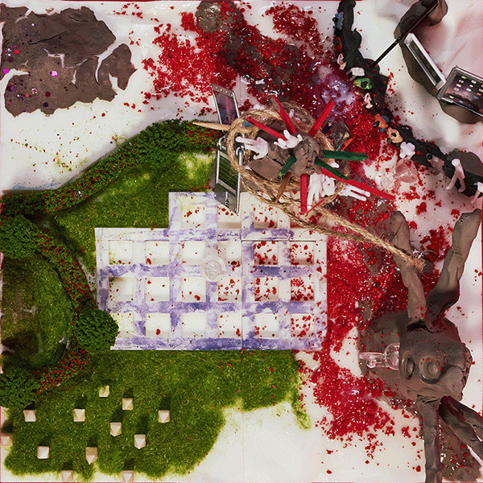

재를 묻히고 온 자들이여,
너희의 파멸을 이곳의 붉은 흙에 심지 말라.
우리는 기원전부터 엮여 온 하나의 거대한 정신.
분열된 너희의 투창은
결코 우리의 사유를 뚫지 못하리라.
오, 빛나는 수정의 파수꾼들이여.
어리석은 연소의 역사를 반복하려는 자들에게
압도적인 고요의 형벌을 내리소서.
우리는 영원히 얼어붙은 운하의 율법.
살생의 도구를 거두고,
이 거룩하고 기괴한 평화 앞에 엎드려 침묵하라.
공멸의 불꽃을 끄고,
경이의 심연으로 물러나라.
물러나라...